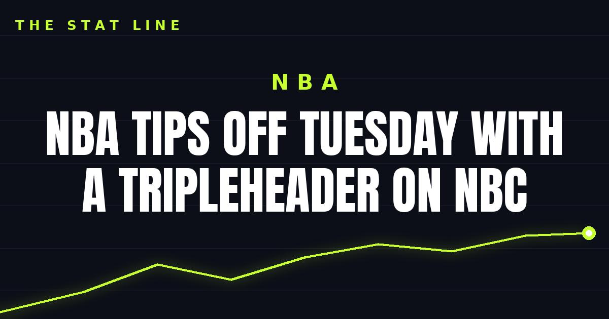

NBA tips off Tuesday with a tripleheader on NBC
The Knicks raise their first championship banner since 1973 on Tuesday night, headlining a nine-hour tripleheader on NBC and Peacock that opens the NBA season.

Disclosure: this post contains affiliate links. I earn a commission on qualifying purchases.
The NBA is back on Tuesday, and NBC is going big for opening night: a tripleheader spanning nine hours, capped by banner night in New York. The Knicks will raise their first championship banner since 1973 before hosting Philadelphia to open their title defense.
The tripleheader
3 p.m.: Celtics at Pistons
7 p.m.: 76ers at Knicks
9:30 p.m.: Thunder at Spurs
The day opens with last season's top two Eastern Conference seeds — Boston visiting Detroit — and closes out west with the Thunder heading to San Antonio.
Banner night at the Garden
The 7 p.m. game is the centerpiece. New York raises a championship banner for the first time in over half a century, then immediately has to defend the crown against Philadelphia at Madison Square Garden. Banner nights can cut two ways: the ceremony lifts the home team, or the visitor plays the spoiler role with extra edge. Either way, it's the game of the night.
Where to watch
All three games air on NBC and stream on Peacock — nine hours of basketball from 3 p.m. ET to the final buzzer in San Antonio.
Sources: NBA opening night 2026-27 schedule, storylines, milestones.
Watch
Source: NBA Tip-Off on NBC and Peacock: Kevin Hart and John Turturro argue the Knicks-76ers rivalry promo — NBC Sports (YouTube). The video shows John Turturro recounting the Knicks' 2026 championship run before Kevin Hart interrupts to defend his 76ers, with a cameo from Karl-Anthony Towns — a comedic promo spot for NBC Sports' coverage of the tip-off tripleheader.
Gear up: [Fanatics](https://fanatics.93n6tx.net/WOLjqe) via Fanatics